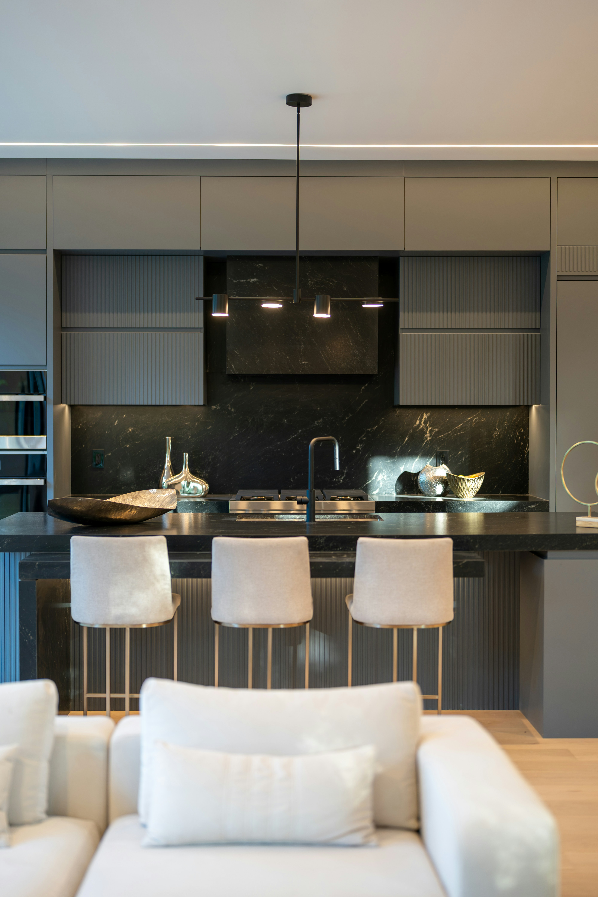
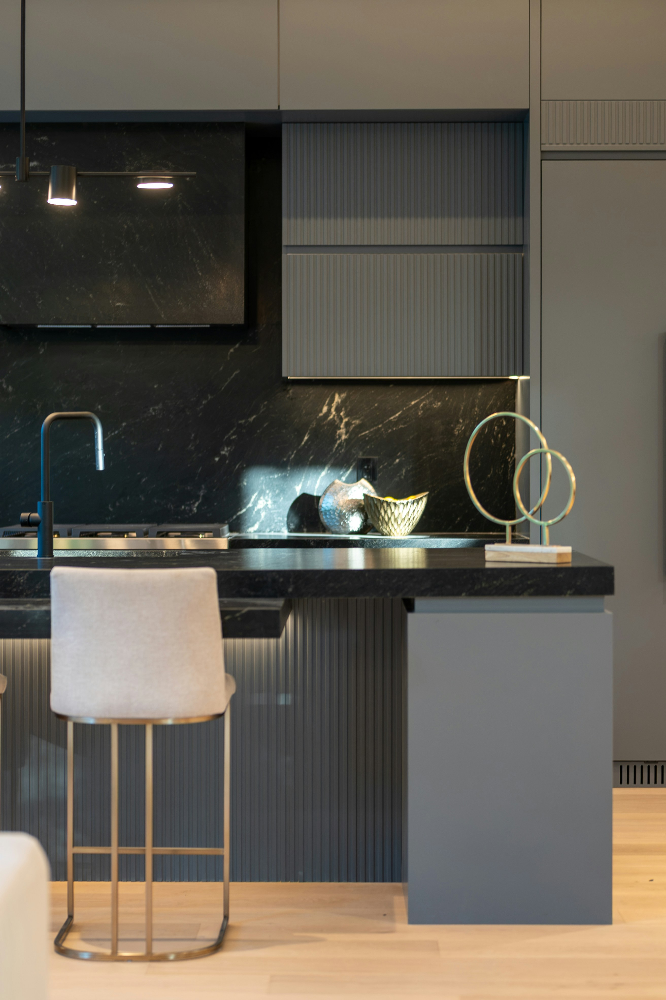
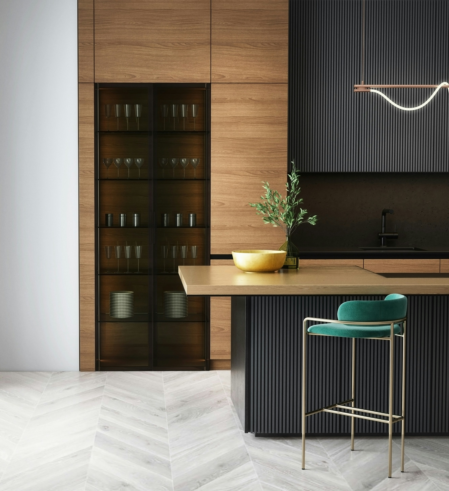
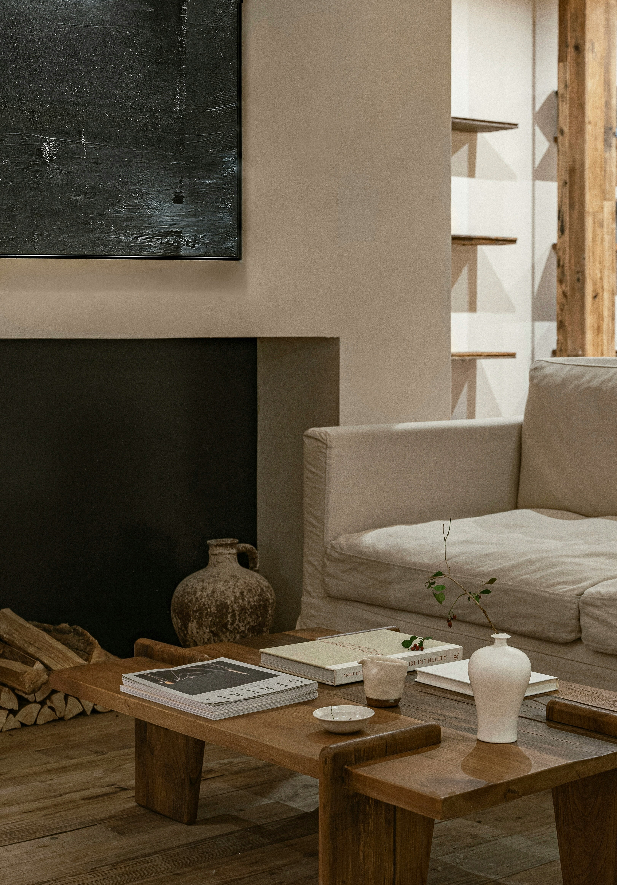
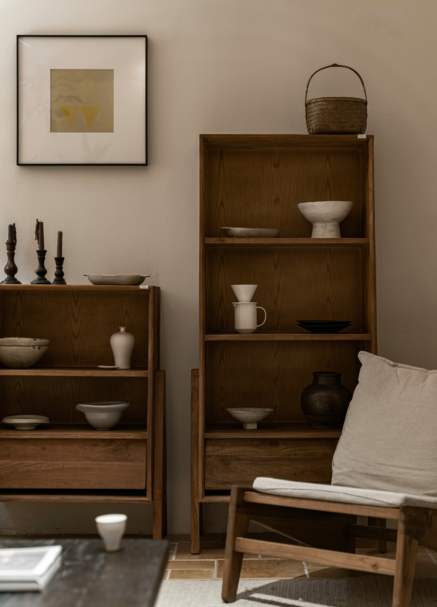
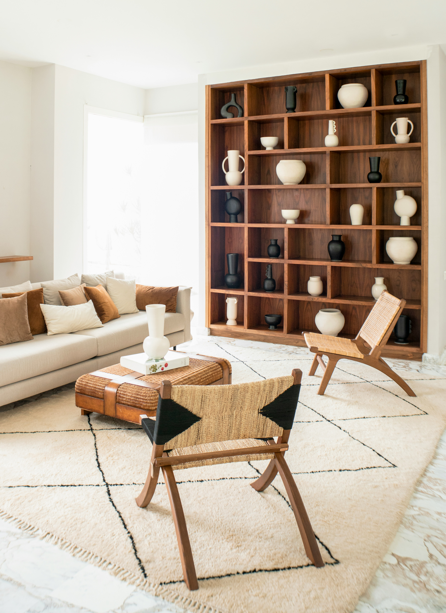
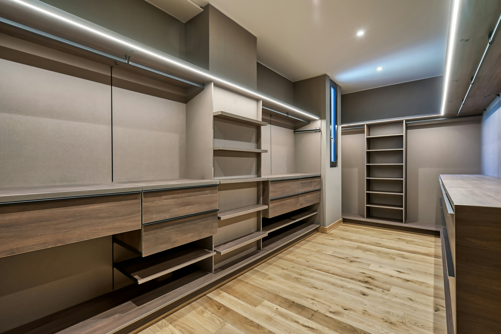
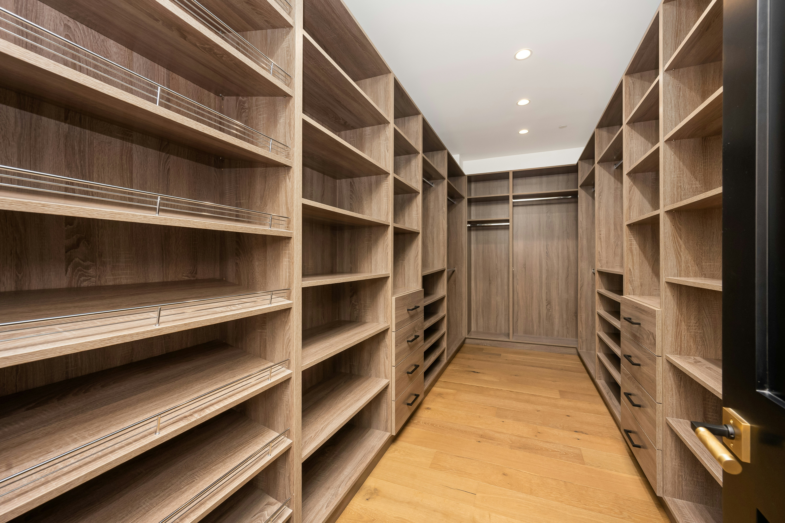
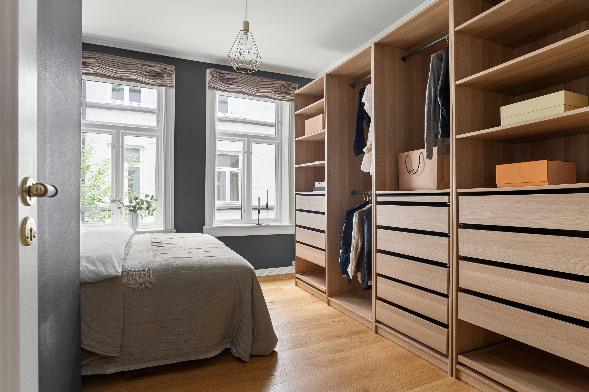

Proyecto de cocina
Cocina completa fabricada a medida, combinando funcionalidad y estética para el uso diario.



Cada proyecto es distinto, porque cada espacio y cada cliente lo son. Estos son algunos de los trabajos que hicimos para transformar ambientes con muebles a medida.
Cocina completa fabricada a medida, combinando funcionalidad y estética para el uso diario.



Mueble de TV y estantería a medida, pensado para integrarse con el resto del ambiente.



Vestidor completo en melamina, diseñado para aprovechar cada rincón del espacio.


